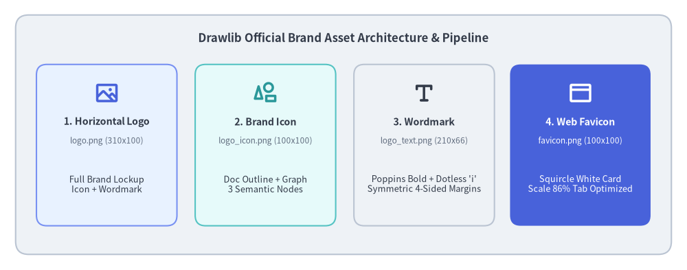
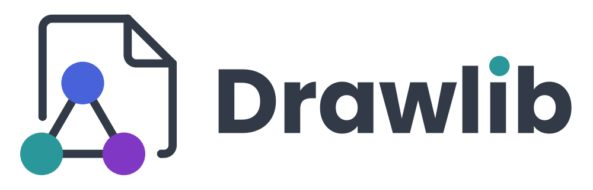
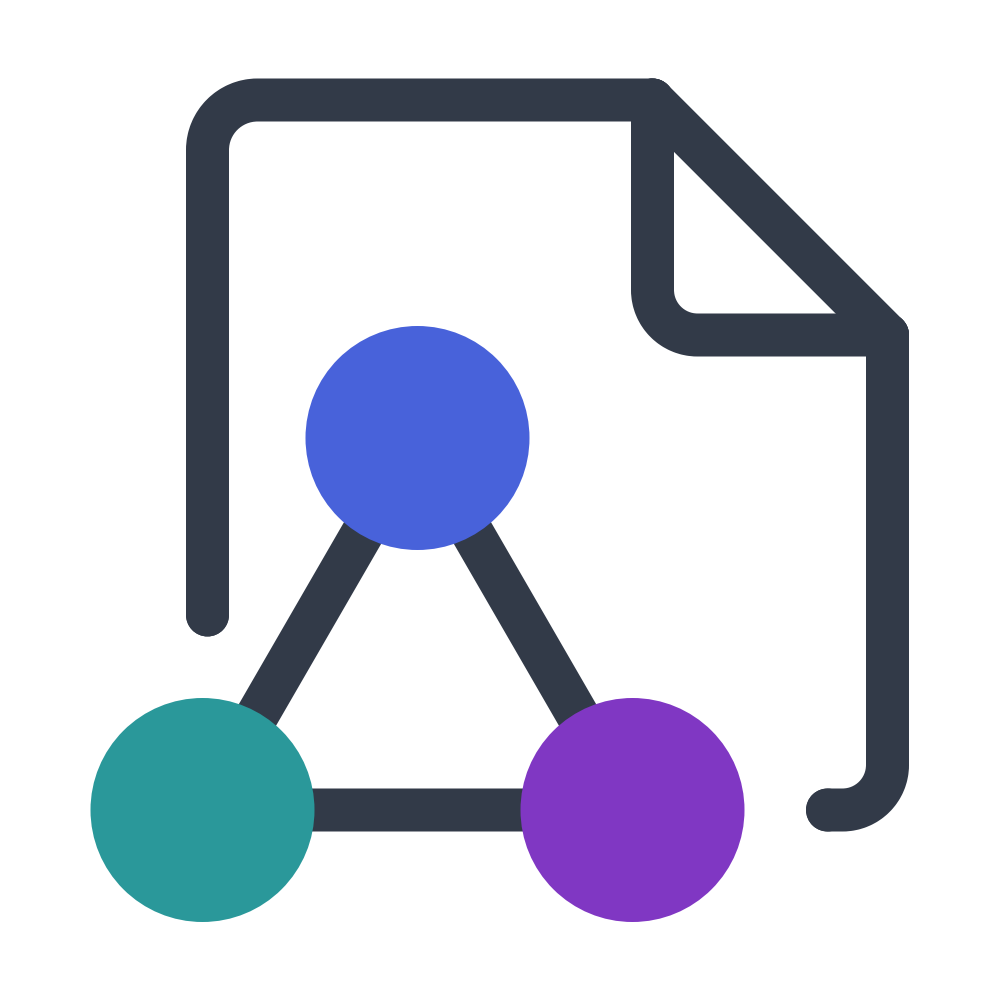
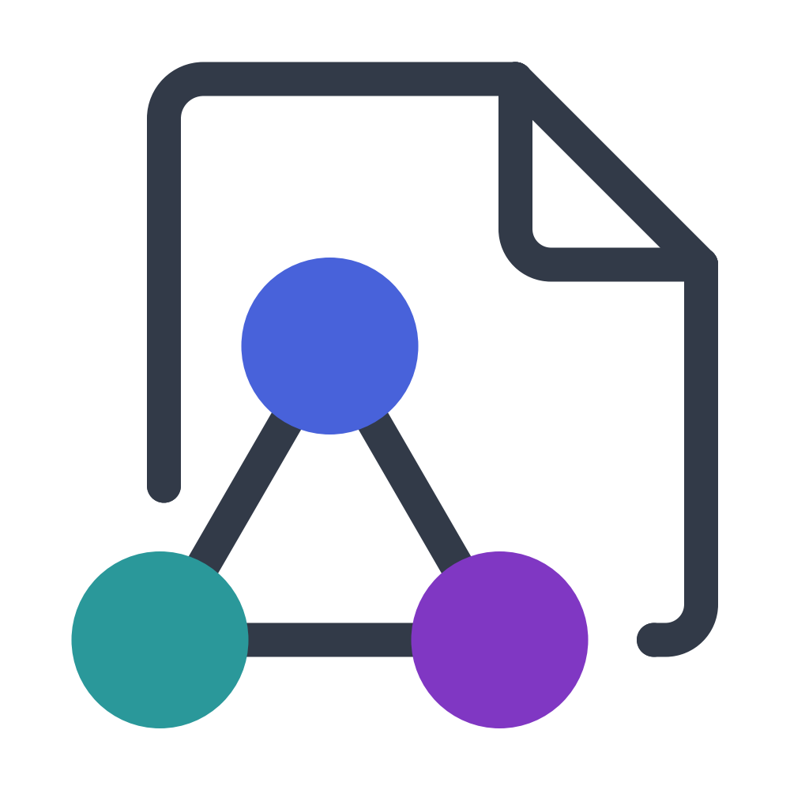
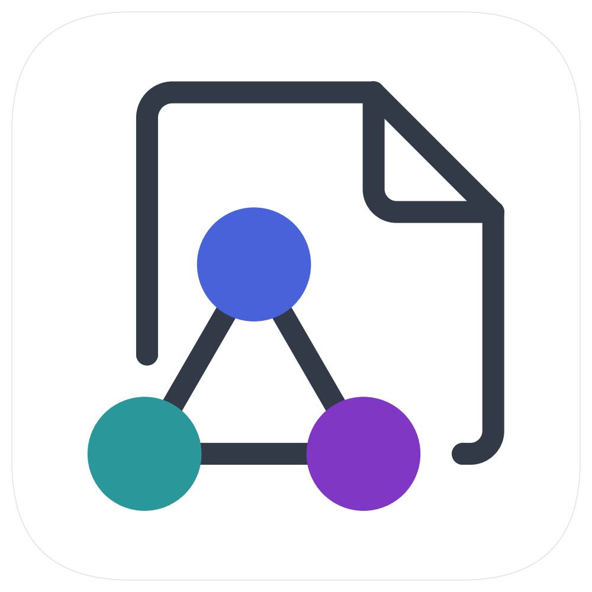

事例紹介: 公式ブランドアセットの設計
Drawlib 自身のビジュアルアイデンティティ（公式の横長ブランドロゴ、正方形アイコンマーク、タイポグラフィワードマーク、およびブラウザ用ファビコン）は、すべて Drawlib の宣言的 API を用いて純粋な Python コードのみで設計・コンパイルされています。
本事例では、ラフなデザインスケッチから数学的なベジェ曲線への変換、サブピクセル精度のタイポグラフィ調整、ブラウザタブ向けの極小ファビコン視認性最適化、そして生成したアセットを Drawlib のプロジェクトスキャフォールディング機構へ統合するまでの、**「コードとしてのイラストレーション（Illustration as Code）」**と自律的マルチモーダル AI 協働ループの全工程を紹介します。

Source Code
from drawlib.canvas import save, setup
from drawlib.icons import phosphor
from drawlib.shapes import rectangle
from drawlib.styles import Colors, Styles
from drawlib.text import text
setup(width=132, height=52)
# Outer container card
rectangle((66, 26), width=126, height=46, style=Styles.Neutral.patch(shape_r=2.5))
text(
(66, 44.5),
"Drawlib Official Brand Asset Architecture & Pipeline",
style=Styles.DarkBold.patch(text_size=12.0),
)
# 4 Asset cards
cards = [
(20.5, "1. Horizontal Logo", "logo.png (310x100)", "Full Brand Lockup\nIcon + Wordmark", phosphor.image, Styles.PrimaryNeutral, Colors.Primary),
(51.0, "2. Brand Icon", "logo_icon.png (100x100)", "Doc Outline + Graph\n3 Semantic Nodes", phosphor.shapes, Styles.SecondaryNeutral, Colors.Secondary),
(81.5, "3. Wordmark", "logo_text.png (210x66)", "Poppins Bold + Dotless 'i'\nSymmetric 4-Sided Margins", phosphor.text_t, Styles.Neutral, Colors.Dark),
(111.5, "4. Web Favicon", "favicon.png (100x100)", "Squircle White Card\nScale 86% Tab Optimized", phosphor.browser, Styles.PrimaryFlat, Colors.White),
]
for cx, title, fname, desc, icon_fn, card_st, icon_col in cards:
is_accent = (cx > 100)
rectangle((cx, 24.0), width=27, height=31, style=card_st.patch(shape_r=2.0))
icon_st = Styles.WhiteBold if is_accent else Styles.PrimaryBold.patch(icon_color=icon_col)
icon_fn((cx, 34.0), width=4.8, style=icon_st)
t_st = Styles.WhiteBold if is_accent else Styles.DarkBold
d_st = Styles.White if is_accent else Styles.Dark
f_st = Styles.White.patch(text_size=8.5) if is_accent else Styles.Muted.patch(text_size=8.5)
text((cx, 28.5), title, style=t_st.patch(text_size=10.2))
text((cx, 24.8), fname, style=f_st)
text((cx, 16.5), desc, style=d_st.patch(text_size=9.2))
save()
1. ブランドコンセプトとデザイントークン規律
Drawlib のブランドアイデンティティを構成するすべての要素には、コード、構造化ドキュメント、そして技術ビジュアライゼーションをひとつに結ぶというライブラリのコアミッションが込められています。
1.1. 核となるビジュアルメタファー
- ドッグイヤー（角折れ）のあるドキュメント: 技術仕様書、設計ドキュメント、ホワイトペーパー、書籍を象徴します。右上の斜めの折り返しが、端正な紙面の印象を与えます。
- 正三角形をなす3ノードのグラフネットワーク: ドキュメント外枠の左下の切り欠きに収められた3つの円形ノードと接続エッジは、リレーショナルモデル、クラウドアーキテクチャ、DAG ワークフロー、そして計算機科学の抽象概念を象徴しています。
- 一体感のある調和: ドキュメントの輪郭線とグラフの接続線は同一の線幅とダークインク色を共有しており、文書と図解がひとつのエンブレムへと自然に融合しています。
1.2. セマンティックカラーの規律
場当たり的な色選びは行わず、ロゴの配色はすべて Drawlib 標準のセマンティックデザイントークンに厳密に基づいています。
Colors.Dark(#323A48): ドキュメント外枠、ネットワークエッジ、およびワードマークの主文字色に使用される深いスレートインク色です。Colors.Primary(#4862DA): 頂点のネットワークノードに配された鮮やかなブルーです。Colors.Secondary(#2A989A): 左下のネットワークノードと、ワードマークDrawlibのiの上の円形ドットに配された爽やかなティールです。Colors.Accent(#8037C3): 右下のネットワークノードに配されたロイヤルパープルです。
2. 数学的ジオメトリとサブピクセル単位の整列
コードで美しいブランドロゴを描くには、厳密な数学的基盤が不可欠です。Drawlib では、すべての角丸フィレットやベースラインオフセットを解析的に算出しています。
2.1. 3次ベジェ曲線による厳密な90度円弧フィレット
Drawlib の lines_bezier() 関数は制御点を受け取って滑らかな曲線パスを描画します。3次ベジェ曲線で厳密な90度の円弧コーナーを表現する場合、端点から制御ハンドルまでの距離は普遍的なベジェ定数 $\kappa$（カッパ）によって定まります。
$$\kappa = \frac{4(\sqrt{2} - 1)}{3} \approx 0.55228475$$
コーナーへの流入点 $P_{\text{in}}$、直角の頂点 $P_{\text{corner}}$、流出点 $P_{\text{out}}$ が与えられたとき、ヘルパー関数は以下の式で制御点 $C_1$ と $C_2$ を算出します。
$$C_1 = P_{\text{in}} + \kappa \cdot (P_{\text{corner}} - P_{\text{in}})$$ $$C_2 = P_{\text{out}} + \kappa \cdot (P_{\text{corner}} - P_{\text{out}})$$
この定式化により、歪みや不連続性のない真円と同等の滑らかな角丸アークが得られます。
2.2. トルコ語の「点のない ı」を活用したタイポグラフィ技法
ワードマーク Drawlib のデザインでは、小文字 i の上の丸いドットだけを Colors.Secondary（ティール色）で際立たせたいと考えました。しかし通常のフォントでは、小文字の i の縦棒（ステム）と黒いドットが単一のグリフとして一体化しています。
フォントファイルを一切改変せず、純粋なコードだけでこの課題をエレガントに解決するため、次の手法を採用しました。
- Unicode のトルコ語ラテン小文字「点のない I（Dotless I）」（
\u0131）を使い、文字列をDrawlıbとして描画します。 - 縦棒（ステム）の正確な中心軸上に、独立したベクター円（
drawlib.shapes.circle）を描画します。 - Poppins Bold フォントにおけるサブピクセル精度の実測に基づき、ステム中心の座標と半径を以下の比率で算出します。
$$\text{dot}_x = w_x + 3.1586 \times \text{unit_scale}$$ $$\text{dot}_y = w_y + 0.39375 \times \text{unit_scale}$$ $$\text{dot}_r = 0.1125 \times \text{unit_scale}$$
これにより、ステムの中心軸と完全に一致した美しいアクセントドットが描画されます。
3. 公式ブランドアセットギャラリー（単体実行可能なコード）
以下に7種類の Drawlib 公式ブランドアセットを掲載します。各コードブロックは100%自己完結しておりそのまま実行可能です。任意の Python ファイルにコピーし、uv run python <file>.py で実行できます。
3.1. 横長フルブランドロゴ (logo.png / logo_transparent.png)
マスターとなる横長ブランドロックアップは、$310 \times 100$ のキャンバス空間内で左側にアイコンマーク、右側に Poppins Bold のワードマークを組み合わせています。

ダークヘッダー、ヒーローバナー、ナビゲーションバーなど向けの透過背景バリエーションでは、color=Colors.Canvas, alpha=0.0 を設定します。
3.2. ブランドアイコンマーク (logo_icon.png / logo_icon_transparent.png)
単体の正方形アイコンマーク（$100 \times 100$ キャンバス空間）は、SNS のプロフィールアバター、GitHub リポジトリのアイコン、アプリケーションのランチャーアイコンなどに適しています。

透過背景のアイコンマークは以下の通りです。

3.3. タイポグラフィワードマーク (logo_text.png / logo_text_transparent.png)
コンパクトな $210 \times 66$ のキャンバス上に、4辺均等なパディング（2000px 出力時に左右 120px、上下 119px の正確な余白）を持たせて描画しています。
透過背景のワードマークは以下の通りです。
3.4. ブラウザ用ファビコン (logo_favicon.png)
ファビコンは、ブラウザのタブバーにおける極小ピクセル領域（$16 \times 16$ や $32 \times 32$ ピクセル）でも瞬時に識別できると同時に、ライト・ダーク両方のブラウザテーマに対して鮮明なコントラストを保つ必要があります。
これを実現するため、以下の3つの設計を取り入れています。
- 白のスクワークル（角丸正方形）カード: 角丸半径
shape_r=20.0と控えめなColors.Gray3の枠線を持つ $96 \times 96$ の白カードを敷くことで、ダークモードのタブ上でも明るく清潔感のある視認性を確保します。 - 透過キャンバスの四隅: 外側キャンバスの四隅は透過（
alpha=0.0）になっているため、ブラウザタブや OS のアプリスイッチャー上に自然な角丸形状で馴染みます。 - 86% スケールへの最適化: キャンバス空間の86%に拡大配置して余分な空白を削ぎ落とし、16px 表示時でも3色のセマンティックノードがくっきりと判別できるようにしています。
（注: 外周が最初から透過設計になっているため、上記のロゴ群とは異なりファビコンには別途の透過バリエーションは不要です。）

4. フレームワークへの統合: デフォルトのプロジェクトファビコン
ブランドアセットをデザイン用リポジトリに閉じ込めるのではなく、Drawlib ではこの公式ファビコンをフレームワーク本体へ直接統合しています。
- プロジェクト雛形への自動同梱 (
drawlib init):- マスターとなる $512 \times 512$ のファビコンが
src/drawlib/_templates/project/_assets/favicon.pngにパッケージングされています。 - 開発者が新しいプロジェクトを生成すると（
drawlib init site、drawlib init doc、drawlib init slide）、_assets/favicon.pngが自動的に<target>_src/_assets/へコピーされます。
- マスターとなる $512 \times 512$ のファビコンが
- 相対パスの自動解決:
- HTML ドキュメントコンパイラ（
drawlib build html）は出力先のディレクトリ階層を自動判定します。 - ルートページ（
index.html）では_assets/favicon.pngをリンクします。 - サブディレクトリ内のページ（例:
architecture/index.html）では../_assets/favicon.pngを自動的に算出してリンクします。
- HTML ドキュメントコンパイラ（
- 容易なブランド差し替え:
- Drawlib のファビコンを自社ロゴやプロジェクト独自のアイコンに変更したい場合は、
_assets/favicon.pngを上書きするだけで完了します。HTML テンプレートを編集する必要はありません。
- Drawlib のファビコンを自社ロゴやプロジェクト独自のアイコンに変更したい場合は、
5. ダークモード対応と高コントラスト調整
現代の開発者ツール、IDE、ドキュメントプラットフォームではダークモードが広く使われています。ライトテーマ前提の濃色ロゴをそのまま暗い背景に置くとコントラストが著しく損なわれ、かといって純白（#FFFFFF）を使うと強い眩しさ（グレア）やハレーションを引き起こします。
あらゆる表示環境で高い視認性と洗練された調和を保つため、以下の2つのデザイン原則に基づく公式のダークバリエーションを設計しました。
Colors.Gray2による輝度の調和:- 純白ではなく、ドキュメント輪郭線とワードマーク文字色に
Colors.Gray2（#EEF2F6、輝度約93%）を採用しています。 - 視覚的な眩しさを抑えつつ、開発者向けダークテーマに馴染む落ち着いたクールスレート調の色味を持たせています。
- 純白ではなく、ドキュメント輪郭線とワードマーク文字色に
- 鮮やかなレベル3パステルトークンの採用:
- 標準のプライマリ系トークン（
#4158D0、#2A989A、#8037C3）は、深い暗色背景の上では沈んで暗く見えがちです。 - そこで3つのグラフノードを Drawlib のレベル3パステルパレットである
Blue3（#7891F2）、Teal3（#55C3C3）、Purple3（#A56EEB）へとシフトさせました。 - ブランド固有の色相アイデンティティを保ったまま発光感と鮮やかさを高め、ダーク背景上で心地よく浮かび上がるように調整しています。
- 標準のプライマリ系トークン（
5.1. ダーク版フルブランドロゴ
Source Code
from drawlib.canvas import canvas, save, setup
from drawlib.fonts import FontSansSerif
from drawlib.lines import line, lines, lines_bezier
from drawlib.shapes import circle
from drawlib.styles import Colors, Style, Styles
from drawlib.text import text
setup(width=310, height=100, color=Colors.Dark)
pts_per_unit = 720.0 / 310.0
stroke_pt = 4.3 * pts_per_unit
cap_radius = 4.3 / 2.0
_KAPPA = 0.55228475
def _corner_arc(p_in, corner, p_out):
cx, cy = corner
return (
(p_in[0] + _KAPPA * (cx - p_in[0]), p_in[1] + _KAPPA * (cy - p_in[1])),
(p_out[0] + _KAPPA * (cx - p_out[0]), p_out[1] + _KAPPA * (cy - p_out[1])),
p_out,
)
with canvas.transform(origin=(0, 0), scale=1.0, translate=(1.5, 0.0)):
x_left, y_left_end, y_top = 20.75, 38.5, 90.0
x_fold, x_right, y_fold = 65.25, 88.75, 66.5
y_bottom, x_right_end = 19.0, 82.75
r_top_left, r_fold_inner, r_bottom_right = 5.0, 4.5, 4.5
stroke_style = Style(line_color=Colors.Gray2, line_width=stroke_pt, line_style="solid")
cap_style = Style(shape_fill_color=Colors.Gray2, shape_line_color=Colors.Gray2, shape_line_width=0.0)
lines_bezier((x_left, y_left_end), [(x_left, y_top - r_top_left), _corner_arc((x_left, y_top - r_top_left), (x_left, y_top), (x_left + r_top_left, y_top)), (x_fold, y_top)], style=stroke_style)
lines_bezier((x_fold, y_top), [(x_fold, y_fold + r_fold_inner), _corner_arc((x_fold, y_fold + r_fold_inner), (x_fold, y_fold), (x_fold + r_fold_inner, y_fold)), (x_right, y_fold)], style=stroke_style)
line((x_fold, y_top), (x_right, y_fold), style=stroke_style)
lines_bezier((x_right, y_fold), [(x_right, y_bottom + r_bottom_right), _corner_arc((x_right, y_bottom + r_bottom_right), (x_right, y_bottom), (x_right - r_bottom_right, y_bottom)), (x_right_end, y_bottom)], style=stroke_style)
for cap_xy in [(x_left, y_left_end), (x_right_end, y_bottom), (x_fold, y_top), (x_right, y_fold)]:
circle(cap_xy, radius=cap_radius, style=cap_style)
lines([(20.25, 19.0), (41.75, 56.2), (63.25, 19.0), (20.25, 19.0)], style=stroke_style)
circle((41.75, 56.2), radius=11.2, style=Style(shape_fill_color=Colors.Blue3, shape_line_color=Colors.Blue3, shape_line_width=0.0))
circle((20.25, 19.0), radius=11.2, style=Style(shape_fill_color=Colors.Teal3, shape_line_color=Colors.Teal3, shape_line_width=0.0))
circle((63.25, 19.0), radius=11.2, style=Style(shape_fill_color=Colors.Purple3, shape_line_color=Colors.Purple3, shape_line_width=0.0))
wx, wy = (111.5, 46.5)
text_size_pt = 110.0
text(
(wx, wy),
"Drawl\u0131b",
style=Styles.DarkBold.patch(
text_font=FontSansSerif.POPPINS_BOLD,
text_size=text_size_pt,
text_color=Colors.Gray2,
halign="left",
valign="center",
),
)
unit_scale = text_size_pt / pts_per_unit
circle(
(wx + 3.1586 * unit_scale, wy + 0.39375 * unit_scale),
radius=0.1125 * unit_scale,
style=Style(shape_fill_color=Colors.Teal3, shape_line_color=Colors.Teal3, shape_line_width=0.0),
)
save()
5.2. ダーク版フルブランドロゴ（透過背景）
Source Code
from drawlib.canvas import canvas, save, setup
from drawlib.fonts import FontSansSerif
from drawlib.lines import line, lines, lines_bezier
from drawlib.shapes import circle
from drawlib.styles import Colors, Style, Styles
from drawlib.text import text
setup(width=310, height=100, color=Colors.Canvas, alpha=0.0)
pts_per_unit = 720.0 / 310.0
stroke_pt = 4.3 * pts_per_unit
cap_radius = 4.3 / 2.0
_KAPPA = 0.55228475
def _corner_arc(p_in, corner, p_out):
cx, cy = corner
return (
(p_in[0] + _KAPPA * (cx - p_in[0]), p_in[1] + _KAPPA * (cy - p_in[1])),
(p_out[0] + _KAPPA * (cx - p_out[0]), p_out[1] + _KAPPA * (cy - p_out[1])),
p_out,
)
with canvas.transform(origin=(0, 0), scale=1.0, translate=(1.5, 0.0)):
x_left, y_left_end, y_top = 20.75, 38.5, 90.0
x_fold, x_right, y_fold = 65.25, 88.75, 66.5
y_bottom, x_right_end = 19.0, 82.75
r_top_left, r_fold_inner, r_bottom_right = 5.0, 4.5, 4.5
stroke_style = Style(line_color=Colors.Gray2, line_width=stroke_pt, line_style="solid")
cap_style = Style(shape_fill_color=Colors.Gray2, shape_line_color=Colors.Gray2, shape_line_width=0.0)
lines_bezier((x_left, y_left_end), [(x_left, y_top - r_top_left), _corner_arc((x_left, y_top - r_top_left), (x_left, y_top), (x_left + r_top_left, y_top)), (x_fold, y_top)], style=stroke_style)
lines_bezier((x_fold, y_top), [(x_fold, y_fold + r_fold_inner), _corner_arc((x_fold, y_fold + r_fold_inner), (x_fold, y_fold), (x_fold + r_fold_inner, y_fold)), (x_right, y_fold)], style=stroke_style)
line((x_fold, y_top), (x_right, y_fold), style=stroke_style)
lines_bezier((x_right, y_fold), [(x_right, y_bottom + r_bottom_right), _corner_arc((x_right, y_bottom + r_bottom_right), (x_right, y_bottom), (x_right - r_bottom_right, y_bottom)), (x_right_end, y_bottom)], style=stroke_style)
for cap_xy in [(x_left, y_left_end), (x_right_end, y_bottom), (x_fold, y_top), (x_right, y_fold)]:
circle(cap_xy, radius=cap_radius, style=cap_style)
lines([(20.25, 19.0), (41.75, 56.2), (63.25, 19.0), (20.25, 19.0)], style=stroke_style)
circle((41.75, 56.2), radius=11.2, style=Style(shape_fill_color=Colors.Blue3, shape_line_color=Colors.Blue3, shape_line_width=0.0))
circle((20.25, 19.0), radius=11.2, style=Style(shape_fill_color=Colors.Teal3, shape_line_color=Colors.Teal3, shape_line_width=0.0))
circle((63.25, 19.0), radius=11.2, style=Style(shape_fill_color=Colors.Purple3, shape_line_color=Colors.Purple3, shape_line_width=0.0))
wx, wy = (111.5, 46.5)
text_size_pt = 110.0
text(
(wx, wy),
"Drawl\u0131b",
style=Styles.DarkBold.patch(
text_font=FontSansSerif.POPPINS_BOLD,
text_size=text_size_pt,
text_color=Colors.Gray2,
halign="left",
valign="center",
),
)
unit_scale = text_size_pt / pts_per_unit
circle(
(wx + 3.1586 * unit_scale, wy + 0.39375 * unit_scale),
radius=0.1125 * unit_scale,
style=Style(shape_fill_color=Colors.Teal3, shape_line_color=Colors.Teal3, shape_line_width=0.0),
)
save()
5.3. ドキュメントにおける動的なテーマ切り替え
ドキュメントサイトでは、標準の CSS メディアクエリと2種類の画像マークアップを組み合わせることで、JavaScript を使わずにライト用・ダーク用のブランドロゴを動的に切り替えられます。
<div class="sidebar-header">
<a href="index.html" class="sidebar-brand">
<!-- Rendered in Light Mode -->
<img src="_assets/logo.png" alt="Drawlib" class="sidebar-logo sidebar-logo-light">
<!-- Rendered in Dark Mode -->
<img src="_assets/logo_dark.png" alt="Drawlib" class="sidebar-logo sidebar-logo-dark">
</a>
</div>
/* Base: Display light logo, hide dark logo */
.sidebar-logo-light { display: block; }
.sidebar-logo-dark { display: none; }
/* System Adaptive: Switch when user/OS prefers dark mode (unless explicitly set to light) */
@media (prefers-color-scheme: dark) {
html:not([data-theme="light"]) .sidebar-logo-light { display: none !important; }
html:not([data-theme="light"]) .sidebar-logo-dark { display: block !important; }
}
/* Explicit Themes: Support data-theme or .dark / .light toggle classes */
html[data-theme="light"] .sidebar-logo-light,
.light .sidebar-logo-light {
display: block !important;
}
html[data-theme="light"] .sidebar-logo-dark,
.light .sidebar-logo-dark {
display: none !important;
}
html[data-theme="dark"] .sidebar-logo-light,
.dark .sidebar-logo-light {
display: none !important;
}
html[data-theme="dark"] .sidebar-logo-dark,
.dark .sidebar-logo-dark {
display: block !important;
}